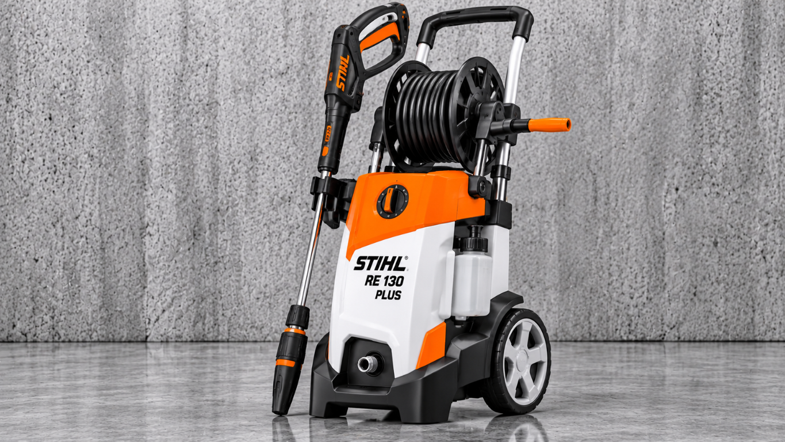
FICHE COMPLÈTE 06 NETTOYAGE · EXTÉRIEURS Le nettoyeur haute pression Découvre à quoi il sert, ses principaux éléments et les précautions à connaître.DES OUTILS, EN CLAIR PREMIER PARCOURS
Mieux connaître
son outil.
Choisis un outil, explore ses différentes parties et apprends à quoi elles servent — sans oublier les dangers et les protections adaptées.
Un guide visuel pour apprendre à son rythme.
OUTIL DU JOUR
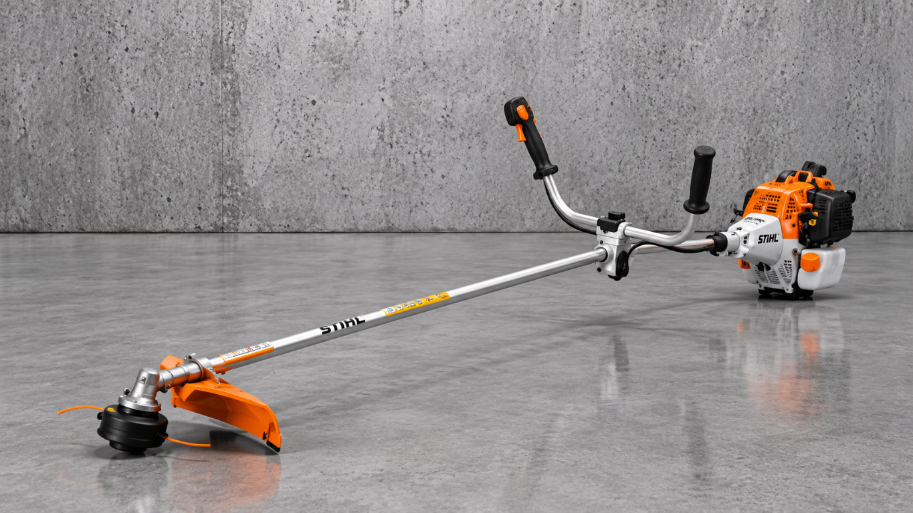
La débroussailleuseAPPRENDRE AVANT D’AGIRUN OUTIL · PLUSIEURS PARCOURS
À TOI DE CHOISIR
Avec quel outil
on commence ?
Choisis un outil pour ouvrir sa page dédiée et explorer son fonctionnement à ton rythme.
22 outils
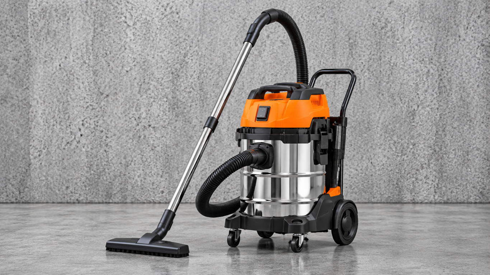
FICHE COMPLÈTE 07 NETTOYAGE · ATELIER L’aspirateur eau et poussière Découvre à quoi il sert, ses principaux éléments et les précautions à connaître.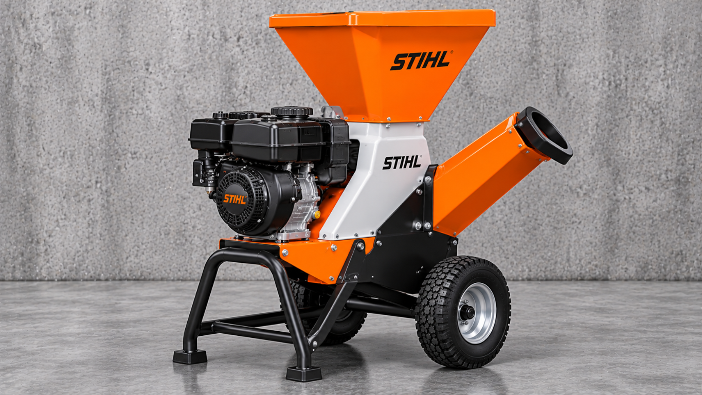
FICHE COMPLÈTE 08 JARDIN · DÉCHETS VERTS Le broyeur de végétaux Découvre à quoi il sert, ses principaux éléments et les précautions à connaître.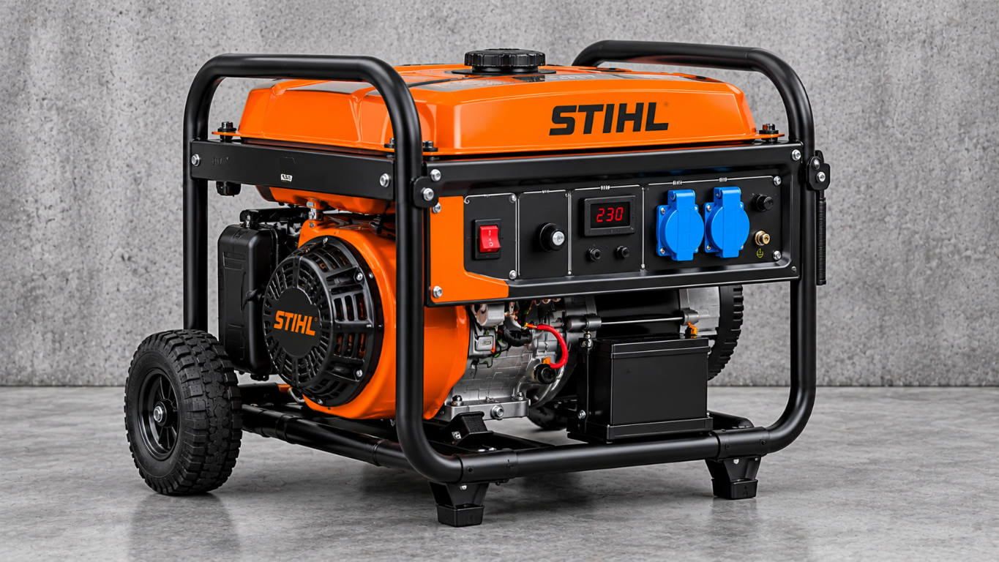
FICHE COMPLÈTE 09 ÉNERGIE · CHANTIER Le groupe électrogène Découvre à quoi il sert, ses principaux éléments et les précautions à connaître.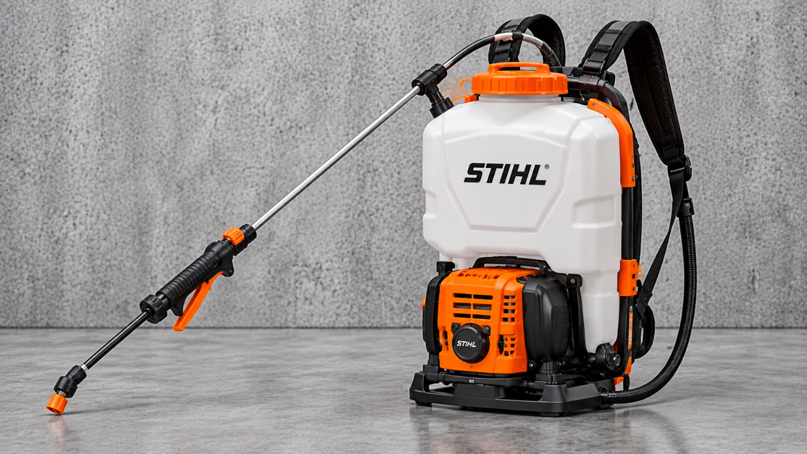
FICHE COMPLÈTE 10 JARDIN · PULVÉRISATION Le pulvérisateur Découvre à quoi il sert, ses principaux éléments et les précautions à connaître.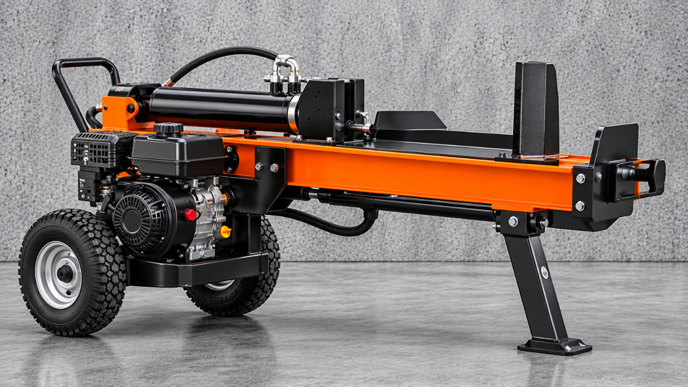
FICHE COMPLÈTE 11 BOIS · FENDAGE Le fendeur de bûches Découvre à quoi il sert, ses principaux éléments et les précautions à connaître.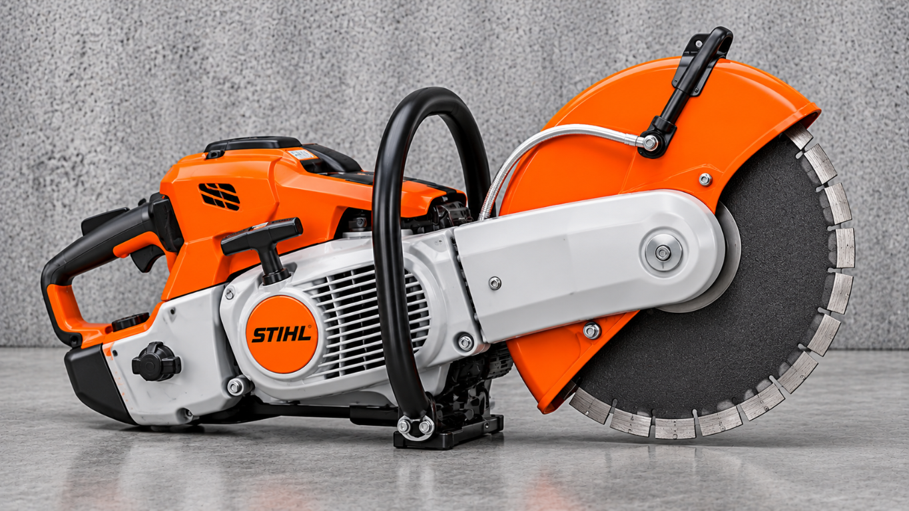
FICHE COMPLÈTE 12 CHANTIER · DÉCOUPE La découpeuse à disque thermique Découvre à quoi il sert, ses principaux éléments et les précautions à connaître.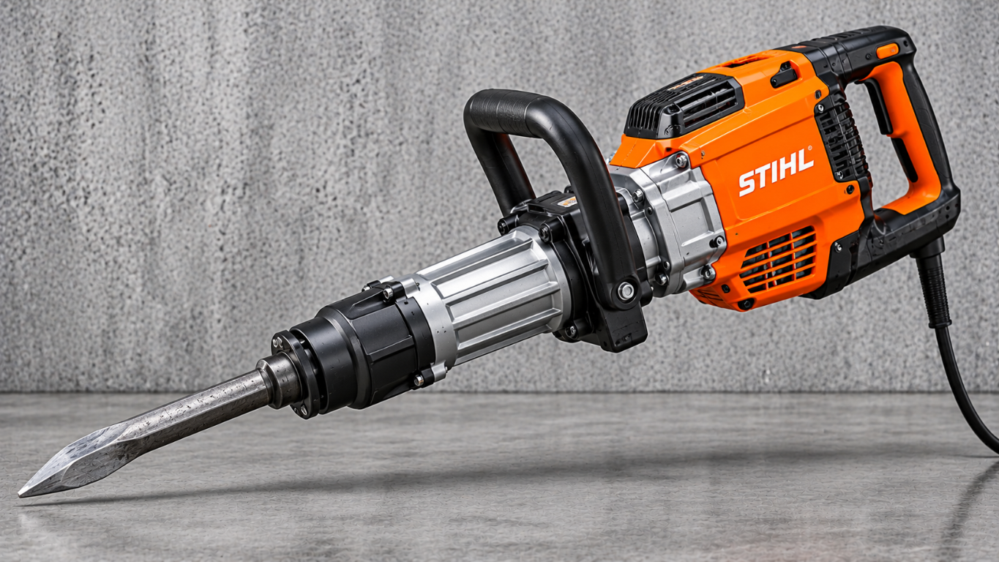
FICHE COMPLÈTE 14 CHANTIER · DÉMOLITION Le marteau-piqueur / brise-béton Découvre à quoi il sert, ses principaux éléments et les précautions à connaître.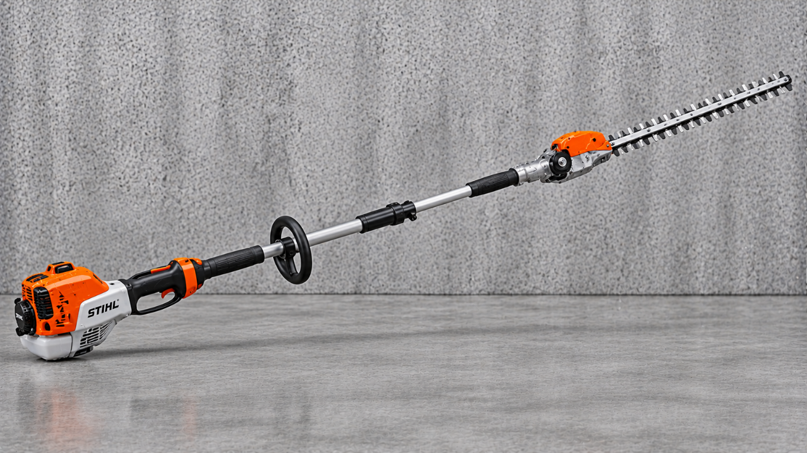
FICHE COMPLÈTE 17 JARDIN · TAILLE EN HAUTEUR Le taille-haie sur perche Découvre à quoi il sert, ses principaux éléments et les précautions à connaître.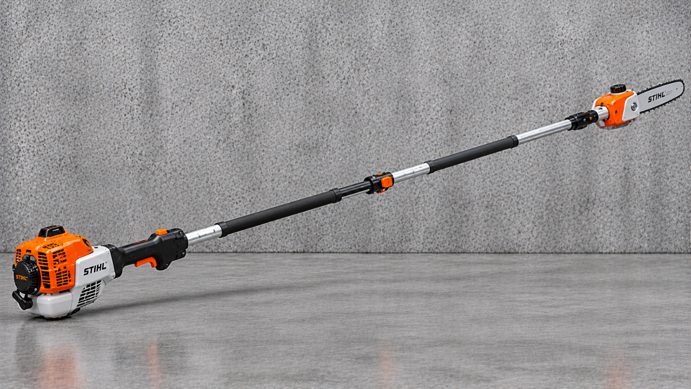
FICHE COMPLÈTE 18 JARDIN · ÉLAGAGE EN HAUTEUR La perche élagueuse Découvre à quoi il sert, ses principaux éléments et les précautions à connaître.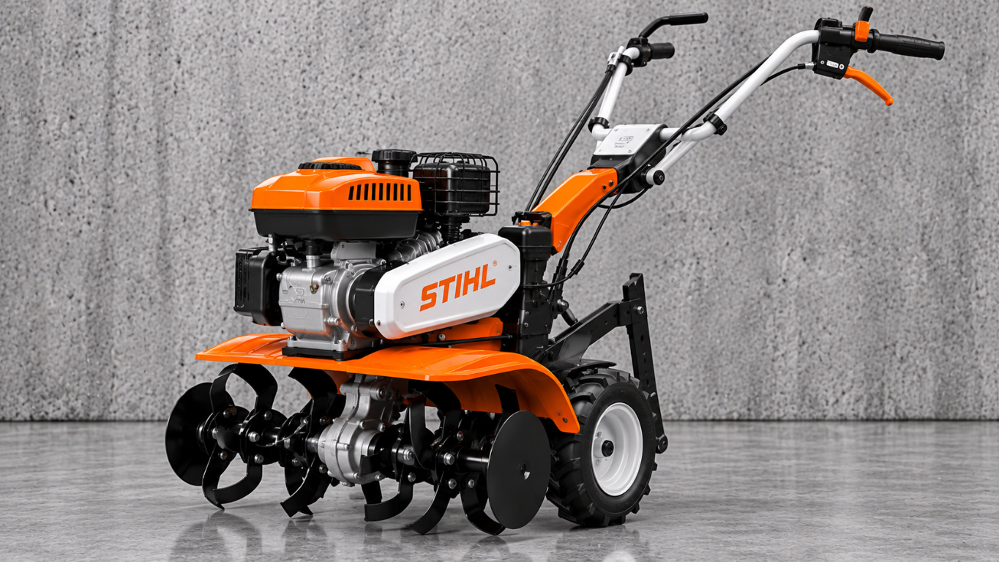
FICHE COMPLÈTE 21 JARDIN · TRAVAIL DU SOL La motobineuse Découvre à quoi il sert, ses principaux éléments et les précautions à connaître.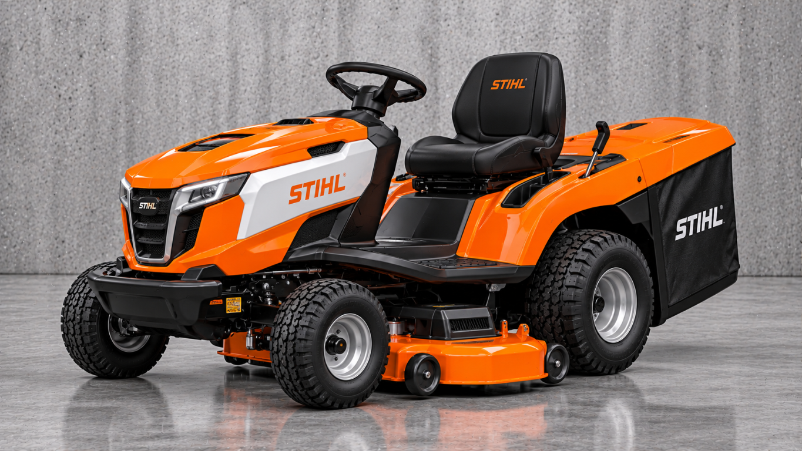
FICHE COMPLÈTE 22 JARDIN · TONTE DES GRANDES PELOUSES La tondeuse autoportée Découvre ses commandes, son plateau de coupe et les précautions à connaître.Aucun outil ne correspond à cette recherche.
S’ENTRAÎNER EN SITUATION
Un chantier à préparer.
10 chantiers différents pour raisonner, faire des choix et préparer le CCF.
Remettre en état les abords d’un espace communal
Tu fais partie d’une équipe d’entretien. La demande concerne une pelouse, une zone d’herbe verte haute d’environ 60 cm, quelques repousses ligneuses et une haie. Le site est proche d’un chemin fréquenté. Tu dois préparer l’intervention, réagir aux imprévus et rendre compte du travail.
Toutes les mises en situation ont été créées avec l’aide d’une intelligence artificielle. Elles servent à s’entraîner : vérifie toujours les consignes avec ton enseignant et la notice du matériel. Ce ne sont pas des sujets officiels ni une autorisation à utiliser seul une machine.
Étape 1 sur 70 bonne réponse